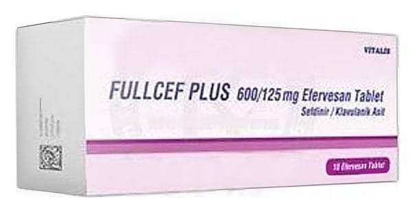

Fullcef Plus 600/125 mg Efervesan Tablet, 10 Adet

Ne için kullanılır
KT · Bölüm 1FULLCEF PLUS”'ın etkin maddesi olan sefdinir oral geniş spektrumlu, yarı sentetik, bir 3. Kuşak sefalosporin grubundan antibiyotikdir. FULLCEF PLUS, 300 mg sefdinir ve 125 mg klavulanik asit'e eşdeğer 296,912 mg potasyum klavulanat; syloid karışımı içeren sarı benekli, yuvarlak, bir yüzü çentikli efervesan tabletler şeklindedir. FULLCEF PLUS, 20 efervesan tablet içeren plastik tüp / silikajelli plastik kapak ambalajlarda piyasaya sunulmaktadır. Klavulanik asidin FULLCEF PLUS formülasyonundaki varlığı, sefdiniri beta-laktamaz enzimlerince parçalanmaktan korur ve sefdinirin etkisini normalde dirençli olan çok sayıda bakteriyi de içine alacak şekilde genişletir. FULLCEF PLUS aşağıda yer alan hastalıkların tedavisinde kullanılır: e Toplum kökenli akciğer iltihabı (pnömoni) e Kronik bronşitin akut alevlenmesi (Bronş iltihabı) e Cilt ve yumuşak doku enfeksiyonları e Akut maksiller sinüzit (Yüz kemiklerinin içindeki hava boşluklarının iltihabı) e Faranjit/Tonsilit (Bademcik iltihabı/Yutak iltihabı)